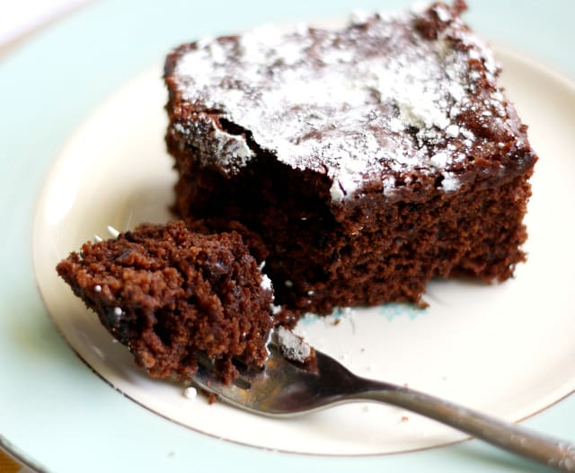

Chocolate and almond cake

Description
This well known recipe is based on the French classic reine de Saba, or Queen of Sheba's cake,
made particularly famous by Elizabeth David. It is for those who love rich chocolate cakes
that are not too sweet and are easy to make on a whim.
Ingredients
- 125g bittersweet chocolate, chopped
- 1 tbsp brandy
- 1 tbsp black coffee
- 100g unsalted butter
- 100g caster sugar
- 100g ground almonds
- 3 eggs, separated
- Icing sugar
Method
- Preheat oven to 160°C. Butter an 18cm round baking tin and line with baking paper.
- Combine chocolate, brandy, and coffee in a bowl over boiling water. Stir when melted and add
butter and sugar. Mix well. Add ground almonds and stir well.
- Lightly beat egg yolks and stir in bowl off the heat. Beat egg whites until firm. Fold in the whites and then spoon into the cake tin.
- Bake for 40-45 mins. The cake will still test a little gooey in the centre. It will have
developed a crust and be very fragile. Cool completely in the tin then transfer to a serving
plate and dust with icing sugar.